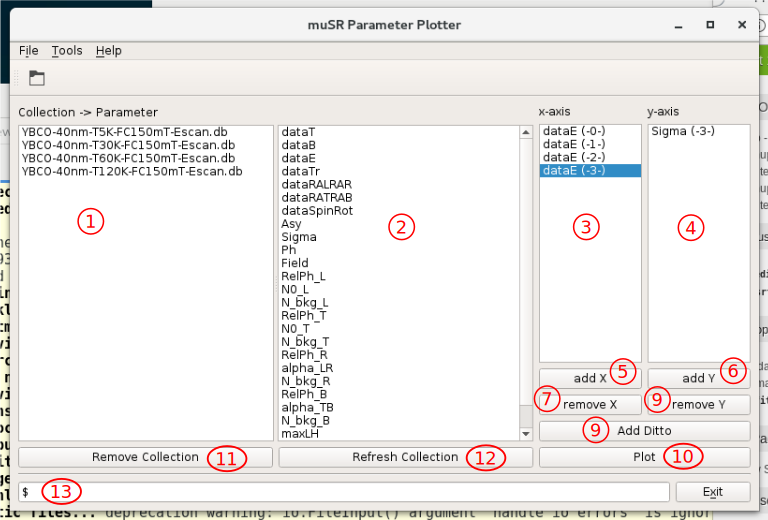
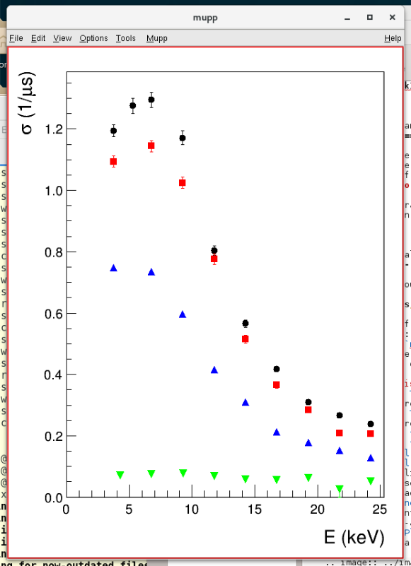
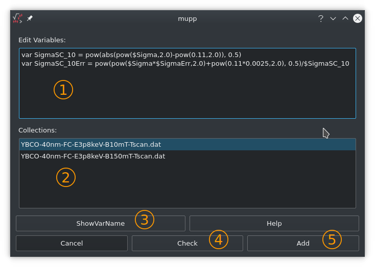

mupp - μSR Parameter Plotter¶
mupp is a little helper program which allows to quickly plot a collection of msr-file parameters, as for instance generated by msr2data. It can handle db- and dat-files. Also a collection of msr-files can be invoked. mupp is heavily inspired by μView (see here).
mupp can be operated from within as graphical user interface or via a command line scripting interface. The mupp GUI can be invoked either directly from the command line or from within musredit.
Each collection bundles a number of runs, where a run is a single μSR measurement. A run is analyzed by a number of parameters (defined in the msr-files), and complemented by additional physical parameters as the temperature, magnetic field, implantation energy, etc. Hence parameters can be seen as vectors and can be plot against each other.
The Graphical User Interface¶
A typical setting could look like this
shows the list of loaded collections. A collection is defined as db- or dat-file (typically the output from msr2data). If you call the open-dialog and select a collection of msr-files, mupp will call msr2data and tries to generate a collection on-the-fly.
in this list, the data-tags of the currently selected collection is presented. The data-tags can be directly dragged over to the x- and y-axis list. Another way is to select the data-tag wished and click add X to add the selected data-tag to the x-axis list. Analogous it is done for the y-axis.
x-axis list. The labels are followed by (-X-) where the number X corresponds to the selection it corresponds to. The numbering of the collection is as given in the collection list.
y-axis list. The labels are followed by (-X-) where the number X corresponds to the selection it corresponds to. The numbering of the collection is as given in the collection list.
add X allows to add the currently selected data-tag to the x-axis list.
add Y allows to add the currently selected data-tag to the y-axis list.
remove X will remove the selected x-axis tag.
remove Y will remove the selected y-axis tag.
Often one would like to compare trends of different settings. In the above example each collections holds an energy scans for a given temperature. Each collection is measured at a different temperature. Now, instead of adding x- and y-axis tags for each collection, you can do the following: you add x- and y-axis data-tags for the first collection. Afterwards you select all the other collections of interest and click on Add Ditto. mupp will then add the corresponding x- and y-axis data-tags accordingly. This is less error prone and quicker!
Clicking the Plot button will invoke mupp_plot (a ROOT based application) which will present the data, as shown here
Remove Collection: will remove the selected collection
Refresh Collection: will reload the collection (db- or dat-file). This is often useful during beamtime where the collection is growing run-by-run.
Command history window.
This is the script command line. Currently it allows to perform the tasks without mouse gambling. In the future much more commands are planed. See the Help / Cmd's for the currently available commands.
{kind=link}
Define Variable Dialog¶
- Variable text edit window.
- Collection link window.
- Shows the parameters of the selected collection.
- Check if the variable/error variable from the edit window is valid.
- Add the variable to the selected collection(s) if the parsing is successful.
A variable defined here is a mathematical expression defined by parameters of loaded collections. Since a parameter also has an associated error, also newly defined variables always need to be defined together with a corresponding error variable. If the name of a variable is defined as SigmaSC_10 (see the above snapshot), the error variable need to be named as SigmaSC_10Err.
Currently the following mathematical functions are defined: max, min, abs, sin, cos, tan, exp, log, ln, pow.
The Scripting Interface¶
mupp can also be operated in a scripting like manner. The use cases are plot updates during run time, or web-based interaction which requests figures. A script is invoked by the command line option -s (see mupp command line summary. Currently the following scripting commands are available:
- loadPath <dir>
- set the load path to <dir>. Bash variables like $HOME are accepted. This is the path where to look for collection files (db- and dat-files).
- load <coll>
- will load the collection <coll>.
- selectAll
- will select all loaded collections. This means every plot of variable x/y will be carried out to ALL collections.
- select <nn>
- selects collection <nn>, where <nn> is either the number of the collections, or its name, e.g. select YBCO-40nm-T5K-FC150mT-Escan.db.
- x <label>
- add <label> as a x-variable. Only one is allowed.
- y <label(s)>
- add <label(s)> as y-variable. Multiple labels are possible.
- norm
- this will normalize all the y-variables by their maximum.
- savePath <dir>
- set the save path to <dir>. The place where the macros, and/or the plot output will be saved.
- plot <fln>
- where <fln> is the file name with extension under which the plot should be saved.
- macro <fln>
- where <fln> is the file name under which the root macro should be saved.
- var <var_name> = <expr>
defines a variable. <expr> is a mathematical expression where collection variables are addressed via the ‘$’, e.g. dataT is addressed by $dataT, etc. An example:
var invT = 1000.0 / $dataT
Each variable has to be accompanied by its error variable. An error variable is defined by the <var_name> followed by Err For the above example the error variable is
var invTErr = $invT * $dataTErr / $dataT
- col <nn> : <var_name>
- links <var_name> to the collection <nn>, where <nn> is the number of the collection as defined by the order of load, starting with 0.
An example script file sigmaSC-vs-temp.txt might look like this:
# This is a comment
# Script: sigmaSC-vs-temp.txt
loadPath ./
load YBCO-40nm-FC-E3p8keV-B10mT-Tscan.db # collection 0
load YBCO-40nm-FC-E3p8keV-B150mT-Tscan.db # collection 1
# define variables: for each variable an associated error variable is needed.
# B=10mT
var SigmaSC_10 = pow(abs(pow($Sigma,2.0)-pow(0.11,2.0)), 0.5) # 0.11 (1/us) is the nuclear contribution (T>Tc)
var SigmaSC_10Err = pow(pow($Sigma*$SigmaErr,2.0)+pow(0.11*0.0025,2.0), 0.5)/$SigmaSC_10
# B=150mT
var SigmaSC_150 = pow(abs(pow($Sigma,2.0)-pow(0.075,2.0)), 0.5) # 0.075 (1/us) is the nuclear contribution (T>Tc)
var SigmaSC_150Err = pow(pow($Sigma*$SigmaErr,2.0)+pow(0.075*0.0025,2.0), 0.5)/$SigmaSC_150
# link variables to collections
col 0 : SigmaSC_10 # error variable SigmaSC_10Err doesn't need to be given, it is automatically linked to SigmaSC_10
col 1 : SigmaSC_150
norm # normalize the plot to the maximum of each y-data-set
# the next 3 cmds means the following: use collection 0, add dataT to the x-axis,
# and SigmaSC_10 to the y-axis
select 0
x dataT
y SigmaSC_10
select 1
x dataT
y SigmaSC_150
# where to save the output
savePath ./
# create a pdf output file of the above defined xy-data sets. Currently also
# other file formats are supported, like png, jpg, etc.
plot SigmaSCVsTemp.pdf
# creates a ROOT macro which can be used for further refinement
macro SigmaSCVsTemp.C
# end
The Usage Summary¶
usage: mupp [OPTIONS] [[--path <fit-param-path>] <fit-param-file-names>]
OPTIONS:
-h, --help: this help
-v, --version: current mupp version
-s <fln>, --script <fln>: <fln> being a mupp script.
--path <fit-param-path>: path where to look for the <fit-param-file-names>
<fit-param-file-names>: list of file name(s) to be loaded.
allowed formats are: db, dat, msr
SCRIPT COMMANDS:
Lines starting with '#', '%', or '//' are comments and will be ignored.
The same is true for empty lines. Comments are also allowed at the end
for a command, i.e. loadPath ./ # the best place ever.
load <coll> : load a collection. <coll> is the filename of the
collection (*.db, *.dat)
loadPath <path> : set the load path to <path>; accepting bash variables
like $HOME, etc.
x <var-name> : set a x-axis variable. <var-name> is a data tag of
the db/dat-file.
y <var-name> : set a y-axis variable. <var-name> is a data tag of
the db/dat-file.
select <nn> : select collection <nn>, where <nn> is the row-number
or the name of the collection to be selected.
selectAll : i.e. already set 'x', 'y' will apply to ALL collections
present.
savePath <path> : sets the save path to <path>; accepting bash variables
like $HOME, etc.
plot <fln> : where <fln> is the file name with extension under which
the plot should be saved.
macro <fln> : where <fln> is the file name under which the root macro
should be saved.
var <var_name> = <expr> : defines a variable.
<expr> is a mathematical expression where
collection variables are addressed via the '$',
e.g. dataT is addressed by $dataT, etc.
col <nn> : <var_name> : links <var_name> to the collection <nn>, where
<nn> is the number of the collection as defined
by the order of load, starting with 0.